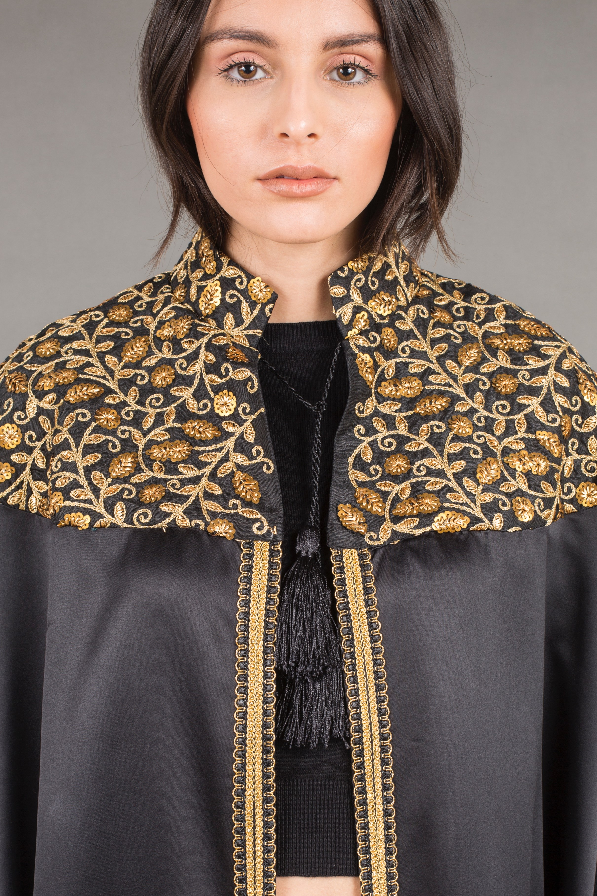

|  |
Collection BurnousLa collection de Burnous se décline en plusieurs tissus et broderies pour s’adapter aux goûts et besoins de chacune et à toute occasion. Classique ou original, sobre ou riche en broderie authentique ou moderne, le Burnous est facile à porter, parfait pour vous tenir chaud l’hiver ou vous donner une touche originale l’été en toute circonstance. Le Burnous est en velours de soie, ou en haïk sur de la laine pure (chaud) pour l’hiver et en sefsari ou en haïk sur du lin (léger) pour l’été, brodé aux paillettes, fils d’argent (Tell) et cannetille (Kontil) ou en Sarrajine, broderie tunisienne aux fils de soie, pour correspondre à tous les goûts et toutes les occasions. Il se décline en version courte et longue pour s’adapter à toutes les morphologies. |